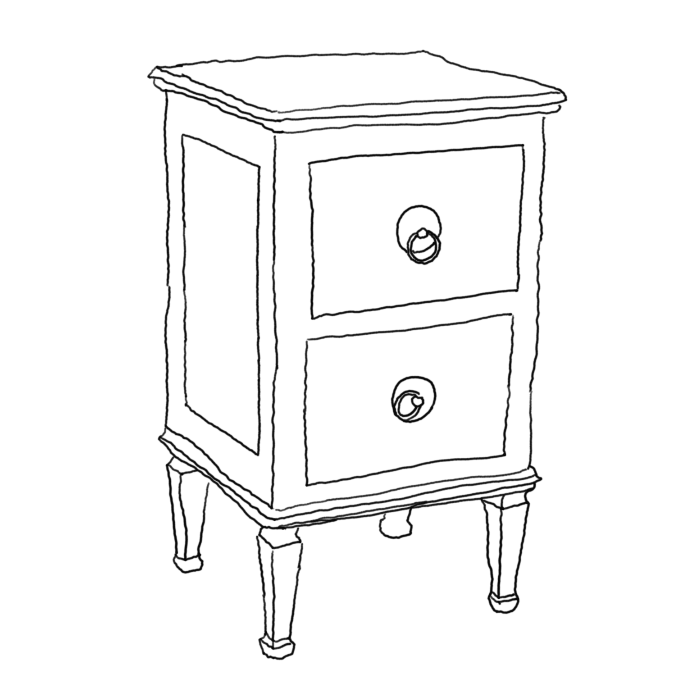
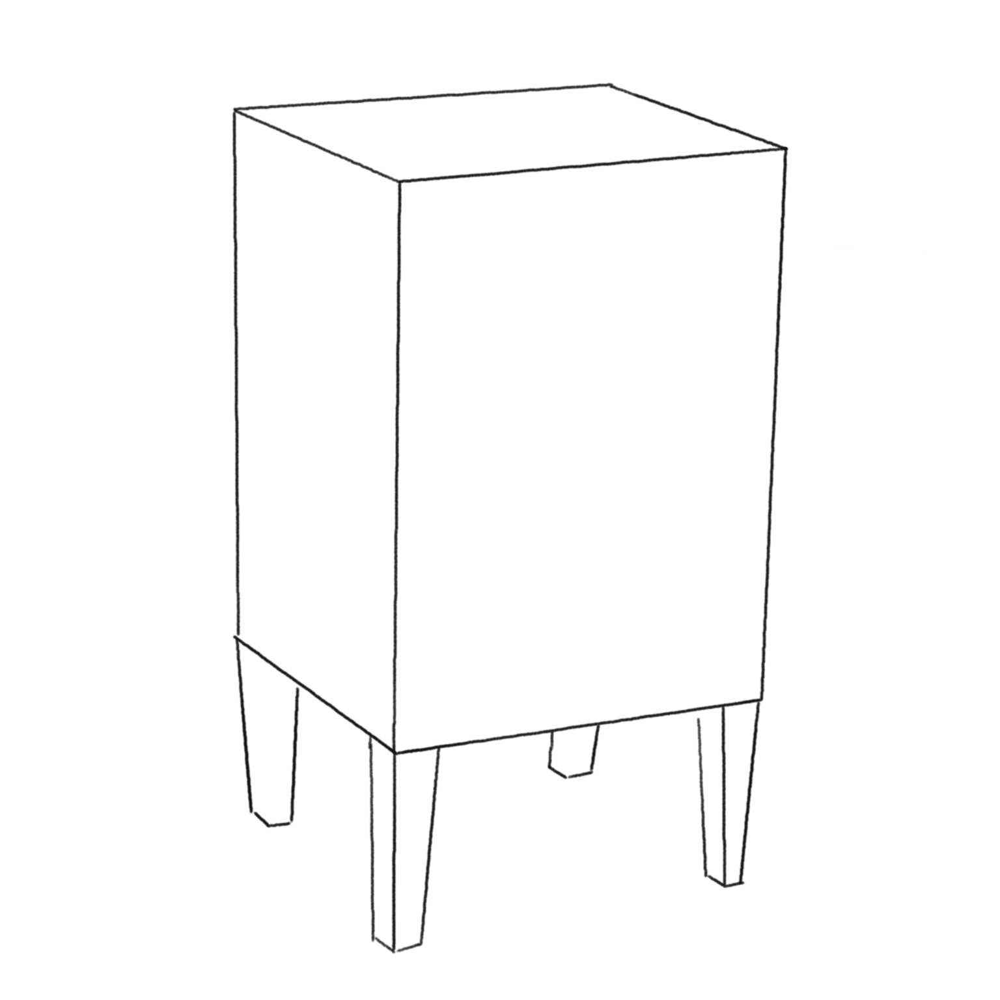
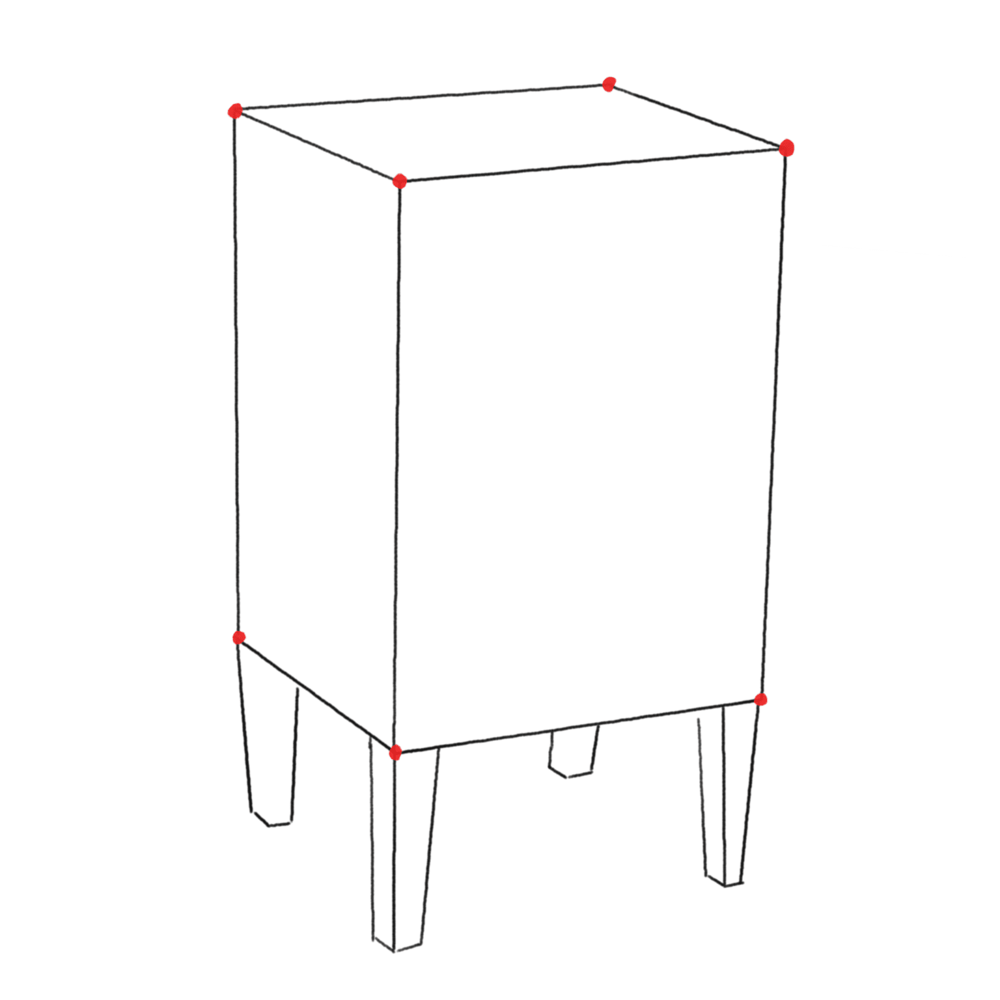
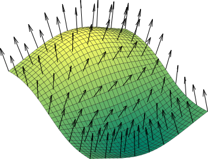
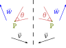
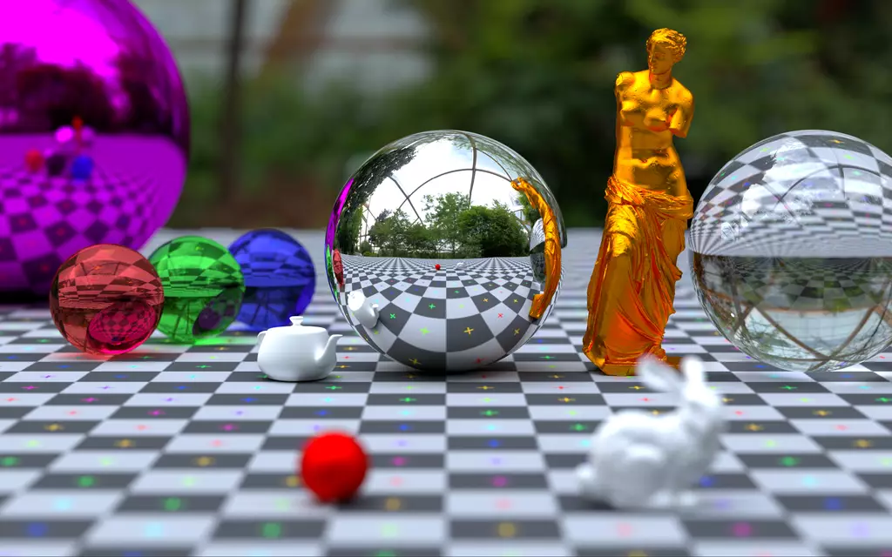
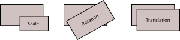
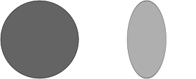
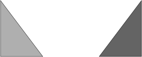

Lesson 5
Calcolo numerico per la generazione di immagini fotorealistiche
Maurizio Tomasi maurizio.tomasi@unimi.it
Modeling objects
«Cornell box»

«Cornell box»




The Geometric Problem
- Placement of objects in space?
- Where is the observer, and what are they looking at?
- Surface of the objects?
Positions and Transformations
The geometric description of an object in space usually makes use of transformations.
These transformations are necessary to place the objects that make up the scene so that their position, orientation, and size are as desired.
The position of the camera is also specified through transformations that identify its position (where is the observer?) and orientation (in which direction are they looking?).
Light/surface interaction

The way a ray of light interacts with a surface depends on the BRDF, which is expressed in terms of the angle \theta = N_x \cdot \Psi between the direction of incidence \Psi and the normal N_x to the surface at point x.
Using Geometry
Our code will simulate the propagation of light rays in the environment:
Each ray will start from a point…
…and will propagate along the direction encoded by a vector…
…until it hits the surface of an object; at that point the code will have to calculate the angle between the direction of arrival and the normal.
All this is complicated by the fact that each object will have its own orientation in space, encoded by a transformation (translation, rotation…).
Encoding Geometry
To solve the rendering equation numerically, our code must correctly handle all the quantities named in the previous slide:
- Points in three-dimensional space (sources of light rays, vertices of the bedside table);
- 3D Vectors (directions of light propagation);
- Normals (the inclination of the surface at a point);
- Matrices (transformations applied to objects and to the observer).
Let’s review the properties of these geometric objects.
Linear Algebra Review
Points and Vectors
A point encodes a position in three-dimensional space. Example: the position P(t) of a particle at time t.
A vector encodes a direction and is not associated with a specific point in space. Example: the velocity \vec v(t) of a particle.
The difference between two points is a vector. Example:
\vec v(t) = \lim_{\delta t \rightarrow 0} \frac{P(t + \delta t) - P(t)}{\delta t}.
Vectors are also used to define bases (reference systems), so let’s explore them further.
Vector Spaces
A vector space V over a field F is a non-empty set V of elements, called vectors, associated with two operators +: V \times V \rightarrow V and \cdot: F \times V \rightarrow V that satisfy these properties \forall u, v, w \in V, \forall \alpha, \beta \in F:
- + is commutative and associative;
- There exists a vector 0 which is the identity element for +;
- \forall u \in V,\ \exist -u \in V: u + (-u) = 0;
- \alpha(\beta v) = (\alpha\beta) v,\quad (\alpha + \beta) v = \alpha v + \beta v,\quad \alpha(v + u) = \alpha v + \alpha u;
- If 1 \in F is the multiplicative identity element in F, then 1u = u.
Inner Product
Given a vector space V over F, the inner product is an operation \left<\cdot, \cdot\right>: V \times V \rightarrow F that has the following properties \forall u, v, w \in V, \forall \alpha \in F:
- \left<\alpha u, v\right> = \alpha \left<u, v\right>;
- \left<u + v, w\right> = \left<u, w\right> + \left<v, w\right>;
- \left<u, v\right> = \overline{\left<v, u\right>};
- \left<u, u\right> > 0 if u \not= 0.
Scalar product on \mathbb{R}^3: \vec u \cdot \vec v = \left\|\vec u\right\|\,\left\|\vec v\right\|\,\cos\theta.
Two vectors u and v are defined as orthogonal if \left<u, v\right> = 0.
Norm of a Vector
Given an inner product, we can define the norm \left\|\cdot\right\|: V \rightarrow F as follows:
\left\|u\right\| = \sqrt{\left<u, u\right>},
which is positive definite and is zero only if u = 0.
A vector u such that \left\|u\right\| = 1 is called normalized.
Spanning Sets
The span of a set of vectors \{v_i\}_{i=1}^N is the set
\mathrm{Span}\left(\{v_i\}_{i=1}^N\right) = \left\{\sum_{i=1}^N \alpha_i v_i,\ \forall \alpha_i \in F\right\}.
In the case of \mathbb{R}^3:
- The span of \vec v is the line passing through 0 and aligned with \vec v.
- The span of two non-parallel vectors \vec v and \vec w is the plane passing through the origin on which \vec v and \vec w lie. (See next slide).
Plane generated by two vectors
Basis (1/2)
The vectors \{v_i\}_{i=1}^N are said to be linearly independent if
\sum_{i=1}^N \alpha_i v_i = 0
holds if and only if \alpha_i = 0\ \forall i=1\ldots N.
A set of vectors \left\{v_i\right\}_{i=1}^N is called basis of B if they are linearly independent and they generate V, i.e.,
\mathrm{Span}\left(\{v_i\}_{i=1}^N\right) = V.
Basis (2/2)
If V admits two bases \left\{e_i\right\}_{i=1}^N and \left\{f_i\right\}_{i=1}^M, the number of elements in both is identical (N = M) and is called the dimension of V. (We ignore infinite-dimensional spaces in this course.)
An orthonormal basis of a vector space V equipped with an inner product is defined as the set of vectors \left\{e_i\right\}_{i=1}^N such that
\left<e_i, e_j\right> = \delta_{ij}\quad\forall i, j = 1 \ldots N.
Vector Representation
Given a basis \{e_i\}_{i=1}^N, it is always possible to write v \in V as
v = \sum_{i=1}^N \alpha_i e_i,
where \alpha_i \in F. (Consequence of the fact that the basis spans the space V).
This representation is always unique; if the basis is orthonormal then
\alpha_i = \left<v, e_i\right>.
Vectors are represented as column matrices: v = (\alpha_1\ \alpha_2\ \ldots)^t.
Vector Representation
The fact that \alpha_i = \left<v, e_i\right> holds only if the basis is orthonormal!
For example, consider the basis e_1 = (1, 0), e_2 = (1, 1) on the plane \mathbb{R}^2. The vector v = (4, 3) is decomposed by solving a linear system, and the solution is
v = e_1 + 3 e_2 = \begin{pmatrix}1\\0\end{pmatrix} + 3 \begin{pmatrix}1\\1\end{pmatrix} = \begin{pmatrix}4\\3\end{pmatrix},
but \left<v, e_1\right> = 4 and \left<v, e_2\right> = 7.
Our code will always use orthonormal bases: \alpha_i = \left<v, e_i\right> is too convenient!
Linear Transformations
A linear transformation from a vector space V to a vector space W is a linear function f: V \rightarrow W:
f(\alpha u + \beta v) = \alpha f(u) + \beta f(v).
Linearity implies that f(0) = 0, because
f(0) = f(v - v) = f(v) - f(v) = 0\quad\forall v \in V.
Matrices (1/2)
A matrix M is a set of scalar values \left\{m_{ij}\right\} \in F that represents a linear transformation f: V \rightarrow W according to a pair of bases for V and W.
If N is the dimension of V and M is the dimension of W, then the matrix M representing f: V \rightarrow W must have n = N columns and m = M rows.
Matrices (2/2)
If the value of f(e_i) is known for all e_i, f can be calculated for any vector:
f(v) = f\left(\sum_{i=1}^N \alpha_i e_i\right) = \sum_{i=1}^N \alpha_i f(e_i).
The previous point is related to the fact that the i-th column of the matrix M contains the representation of f(e_i), with e_i being the i-th element of the so-called canonical basis of V: e_1 = (1\ 0\ 0\ldots)^t, e_2 = (0\ 1\ 0\ldots)^t, etc.
First Example
Consider the matrix in \mathbb{R}^2
M = \begin{pmatrix}3&4\\2&-1\end{pmatrix}
and the canonical basis e_1 = (1\ 0)^t, e_2 = (0\ 1)^t.
It is easy to see that the first column of M is equal to M e_1 and the second to M e_2:
M e_1 = \begin{pmatrix}3&4\\2&-1\end{pmatrix} \begin{pmatrix}1\\0\end{pmatrix} = \begin{pmatrix}3\\2\end{pmatrix},\ {} M e_2 = \begin{pmatrix}3&4\\2&-1\end{pmatrix} \begin{pmatrix}0\\1\end{pmatrix} = \begin{pmatrix}4\\-1\end{pmatrix}.
Second Example
Let’s write the matrix R(\theta) that represents a rotation of \theta around the origin of the Cartesian xy plane.
As stated before, it is sufficient to calculate R(\theta) e_1 and R(\theta) e_2:
R(\theta) e_1 = \begin{pmatrix}\cos\theta\\\sin\theta\end{pmatrix}, \quad R(\theta) e_2 = \begin{pmatrix}\cos(\theta + 90^\circ)\\\sin(\theta + 90^\circ)\end{pmatrix} = \begin{pmatrix}-\sin\theta\\\cos\theta\end{pmatrix},
because they are the columns of the matrix R(\theta):
R(\theta) = \begin{pmatrix}\cos\theta&-\sin\theta\\\sin\theta&\cos\theta\end{pmatrix}.
Reflections
Let’s now consider a particular type of transformation, called reflection.
Points, vectors, and angles transform intuitively with respect to reflections:

Pseudovectors
Now consider a car moving away from us, and its mirrored copy.
The angular momentum of the wheels \vec\omega does not transform like a normal vector under reflection: it is a pseudovector.


Pseudovectors
The problem with \vec\omega is that it is defined through the cross product: \vec \omega = \vec r \times \vec p, and the result of a cross product is always a pseudovector.
This can also be seen in the case of Ampère’s law:


Transformations

Transformation Types
In our code, we will implement only invertible transformations:
Scaling (enlargement/reduction);
Rotation around an axis;
Translation (displacement).

Scaling Transformations
General Properties
A scaling transformation is represented by a diagonal matrix M = \mathrm{diag}(s_1, s_2, \ldots) with s_i \not= 0\ \forall i:
M = \begin{pmatrix}s_1& 0& \vdots\\0& s_2& \vdots\\\ldots& \ldots&\end{pmatrix}.
Scaling transformations where s_i < 0 are also called reflections with respect to the i-th axis (reflection across a mirror).
Example
A circle on the plane can be transformed into an ellipse through a scaling transformation; in the example below, M = \mathrm{diag}(1/2, 1):

A reflection with respect to the y axis is represented by M = \mathrm{diag}(1, -1).

Transformations and Normals
We already have a problem with this type of transformation!
The normals to the objects do not transform as they should:
What is the transformation law for normals?
Transformations and Normals
A normal \hat n is defined in terms of the tangent vector \hat v:
\hat n^t \hat v = 0.
Suppose we want to apply the (invertible) transformation N to the vector \hat v. We must apply a transformation M to the vector \hat n such that
\left(M \hat n\right)^t \left(N \hat v\right) = 0.
Transformations and Normals
Knowing that \left(A B\right)^t = B^t A^t, we obtain
\left(M \hat n\right)^t \left(N \hat v\right) = 0\quad\Rightarrow\quad\hat n^t \left(M^t N\right) \hat v = 0.
Already knowing that \hat n^t \hat v = 0, it follows that the equation is true if
M^t N = \mathbb{1}\quad\Rightarrow\quad M = \left(N^{-1}\right)^t,
where we have used the assumption that the transformation N has an inverse.
Handling Normals
We have seen that normals behave differently from vectors in the specific case of scaling transformations.
However, the result we obtained is general: it is not only valid for scaling transformations, but for any invertible transformation N.
In numerical code, it is convenient to store both the matrix N corresponding to a transformation and the transpose of its inverse \left(N^{-1}\right)^t in a type (
struct,class,record, etc.) that represents an invertible transformation: it uses more memory, but the calculations are faster.
Rotations
Formalism
To define a rotation on the plane around the origin, only one degree of freedom is sufficient.
However, to define a rotation in three dimensions around the origin, three degrees of freedom are needed: the rotation axis and the angle. (The rotation axis is a unit-length vector, so it only has two degrees of freedom).
There are various ways to represent a rotation, some more effective than others depending on the context: Euler angles, axis/angle, rotation matrices, quaternions. We will focus on rotation matrices.
Rotations and Matrices
In 2D, we already wrote the rotation matrix around the origin:
R(\theta) v = \begin{pmatrix}\cos\theta&-\sin\theta\\\sin\theta&\cos\theta\end{pmatrix} \begin{pmatrix}v_1\\v_2\end{pmatrix} = \begin{pmatrix}v_1\cos\theta - v_2\sin\theta\\v_1\sin\theta + v_2\cos\theta\end{pmatrix}.
In two dimensions, R(\alpha) R(\beta) = R(\beta) R(\alpha) = R(\alpha + \beta).
3D Rotations
In 3 dimensions, rotations can be considerably more complex because there are infinitely many axes that can be used for rotation around the origin!
In general, a matrix R in \mathbb{R^n} represents a rotation if and only if \det R = 1 and R R^t = \mathbb{1}, i.e., if its transpose coincides with its inverse.
Composition of Rotations
In 3D, the composition of rotations does not commute (unlike the 2D case).
The two dice below undergo two rotations R_1 and R_2: for the red die, the rotation is R_1 R_2, for the green die it is R_2 R_1. We can see that the final positions are different:
Elementary Rotations
It is easy to write the rotations around the three axes \hat e_x, \hat e_y and \hat e_z. For example, the rotation around \hat e_z is
R_z(\theta) v = \begin{pmatrix}\cos\theta&-\sin\theta&0\\\sin\theta&\cos\theta&0\\0&0&1\end{pmatrix}.
It is possible to write a matrix R_{\hat v}(\theta) that describes a rotation by an angle θ around an arbitrary axis \hat v; see the Wikipedia page for details.
Euler Angles
A generic rotation R_{\hat v}(\theta) can always be expressed as a product of the elementary rotations R_x(\theta_x), R_y(\theta_y) and R_z(\theta_z) for appropriate values of \theta_x, \theta_y, \theta_z.
This property is the basis of the formalism of rotations with Euler angles, which, however, we will not use in our code.
Translations
The Problem of Translations
A translation T_{\vec{k}} is an operation that moves a point P by \vec{k}:
T_{\vec{k}} (P) = P + \vec{k}.
So far we have used matrices to represent scaling and rotation transformations. Unfortunately, 3×3 matrices cannot represent translations in three-dimensional space: a translation T is not a linear operator! If it were, then it would hold that
T_{\vec{k}}(0) = 0\quad\forall\ \vec{k}.
Homogeneous Coordinates
Fortunately, there is a trick, widely used in computer graphics, which consists of using homogeneous coordinates.
In homogeneous coordinates, we consider the space \mathbb{R}^4 instead of \mathbb{R}^3, and we write points P and vectors \vec{v} differently:
P = \begin{pmatrix}p_x\\p_y\\p_z\\1\end{pmatrix}, \quad \vec{v} = \begin{pmatrix}v_x\\v_y\\v_z\\0\end{pmatrix}.
Homogeneous Transformations
A matrix M is transformed into homogeneous coordinates by adding a row and a column:
M = \begin{pmatrix} m_{11}&m_{12}&m_{13}\\ m_{21}&m_{22}&m_{23}\\ m_{31}&m_{32}&m_{33} \end{pmatrix}\ \rightarrow% \ M_h = \begin{pmatrix} m_{11}&m_{12}&m_{13}&0\\ m_{21}&m_{22}&m_{23}&0\\ m_{31}&m_{32}&m_{33}&0\\ 0&0&0&1 \end{pmatrix}
From the block form of M_h, it is easy to understand that applying M_h to P and \vec{v} leads to the same result as in the non-homogeneous case in \mathbb{R}^3.
Translations
In homogeneous coordinates, the translation operation along a vector \vec{k} is linear, and is represented as follows:
T_{\vec{k}} = \begin{pmatrix} 1&0&0&k_x\\ 0&1&0&k_y\\ 0&0&1&k_z\\ 0&0&0&1 \end{pmatrix}
The operator is obviously linear because it is in matrix form.
Properties
- T_{\vec{k}}^{-1} = T_{-\vec{k}}: the inverse transformation of the translation along \vec{k} is the translation along -\vec{k};
- T_{\vec{u}} T_{\vec{w}} = T_{\vec{u} + \vec{w}}: the composition of two translations is equal to the translation along the sum of the two vectors;
- T_{\vec{u}} T_{\vec{w}} = T_{\vec{w}} T_{\vec{u}}: translations are commutative operators;
- T_{\vec{k}} \vec{v} = \vec{v}: unlike points, vectors are not translated.
Rototranslations
Composing a translation T_{\vec{k}} and a rotation R(\theta) depends on the order: the result of T_{\vec{k}}\,R(\theta) is different from that of R(\theta)\,T_{\vec{k}}:
It can be verified that homogeneous matrices correctly implement this behavior.
Version numbers
Purpose of Version Numbers
- Every program should have a version number associated with it, which indicates how up-to-date the program is.
- A user can compare a version number on the official website of the program with the one installed on their computer.
- Many different approaches to version numbers exist.
Example I: Release Date
- Ubuntu Linux: a Linux distribution.
- The version number is the release date in the form
year.month, associated with a nickname like «Focal fossa» (20.04). - Linked to a strict release schedule (every 6 months).
- The C++ ISO standards follow a similar scheme, using only the year: C++11, C++14, C++17, C++20, …
- Useful especially if following a rigid and regular schedule.
Example II: Irrational Number
TeX: a digital typography program created by Donald Knuth (to type The Art of Computer Programming, 1962–2019).
The version is the rounding of the value of \pi, where each subsequent version adds a digit:
- 3
- 3.1
- 3.14
- 3.141…
METAFONT, the program that manages TeX fonts, uses e = 2.71828\ldots
Mathematically fascinating, but impractical!
Example III: Even/Odd Versions
- Versions indicated with
X.Y, whereXis the «major version» andYis the «minor version». - If
Yis even, the version is stable (e.g.,2.0,2.2,2.4, …); otherwise, it is a development version (e.g.,2.1,2.3,2.5…), not ready for use by the general public but only by more experienced users. - Nim, Gtk+, GNOME, Lilypond follow this approach.
- Widely used in the past, now tends to be abandoned: experience has shown that odd versions often tend to become «eternal».
Example IV: Semantic Versioning
- The scheme we will use in this course is called semantic versioning, used for
example by Julia. It uses the
X.Y.Zscheme:Xis the «major version»Yis the «minor version»Zis the «patch version»
- The rules for assigning values to
X,Y, andZare strict and allow users to decide whether it is worth updating software or not.
Semantic Versioning (1/2)
- The
X.Y.Zscheme is used, starting from version0.1.0. - With each release of a new version, one of these rules is followed:
- Increment
Z(«patch number») if only bugs have been fixed; - Increment
Y(«minor number») and resetZto zero if new features have been added; - Increment
X(«major number») and resetYandZto zero if features have been added that make the program incompatible with the last released version.
- Increment
Semantic Versioning (2/2)
- In the early stages of a project, new versions are released quickly and are used by «beta testers»; it is not important to indicate when incompatibilities are introduced because these are frequent, but the users are still few.
- Version
1.0.0should be released when the program is ready to be used by general users. - Consequently, versions prior to
1.0.0follow different rules:- Increment
Zif bugs are fixed; - Increment
Yand resetZin all other cases.
- Increment
Example (1/3)
We have written a program that prints
Hello, world!:$ ./hello Hello, wold!The first «official» version we release, after numerous beta versions (it’s a complex project!), is obviously
1.0.0.We realize that the program prints
Hello, wold!, so we fix the problem and release version1.0.1(bug fix).
Example (2/3)
We add a new feature: if a name like
Donaldis passed from the command line, the program printsHello, Donald!. Without arguments, the program still writesHello, world!:$ ./hello Hello, world! $ ./hello Donald Hello, Donald!We have added a feature but preserved compatibility (without arguments, the program still works the same as version
1.0.1), so the new version will be1.1.0.
Example (3/3)
We decide it is time to introduce internationalization into our code (internationalization, abbreviated as I18N).
The code checks the value of the
$LANGenvironment variable (used on Unix systems) and decides which language to print the message in:$ ./hello Donald # …when I run it on a english-talking machine Hello, Donald! $ LANG=it_IT.UTF-8 ./hello Goofy Salve, Goofy!The program is not compatible with version
1.1.0because on an Italian machine it now printsSalve, mondo!instead ofHello, world!.Therefore, I must release version
2.0.0.
User Perspective
- If a new «patch release» of the version being used is released
(e.g.,
1.3.4→1.3.5), the user should always update. - If a new «minor release» of the version being used is released
(e.g.,
1.3.4→1.4.0), the user should update only if they consider the new features useful. - A new «major release» (e.g.,
1.3.4→2.0.0) should be installed only by new users or by those who intend to update the way they use the program.
Example: Textualize 2.0.0
In February 2025, version 2.0.0 of Textualize, a Python application framework for creating pseudo-graphical interfaces from the terminal, was released.
The release notes provide this explanation:
It took us more than 3 years to get to 1.0. But a couple of months to get to 2.0? Why?
We follow Semver which says that after 1.0, all breaking changes bump the major version number. We have some breaking changes here, which will be trivial to fix – if they effect you at all. But a breaking change is a breaking change! # Disadvantages of semantic versioning
Sometimes it is difficult to establish whether a change is “breaking” or not (see for example the article Semantic Versioning Will Not Save You).
For projects with a large critical mass, it may make more sense to use the release date, as is the case with C++. Python is also moving in this direction with PEP 2026.
We will use semantic versioning for consistency, but in your projects you should evaluate which is the most appropriate solution.